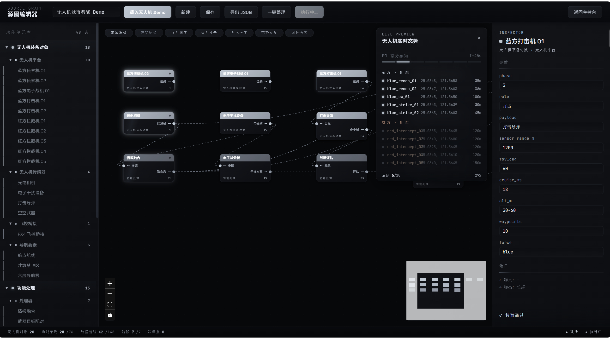
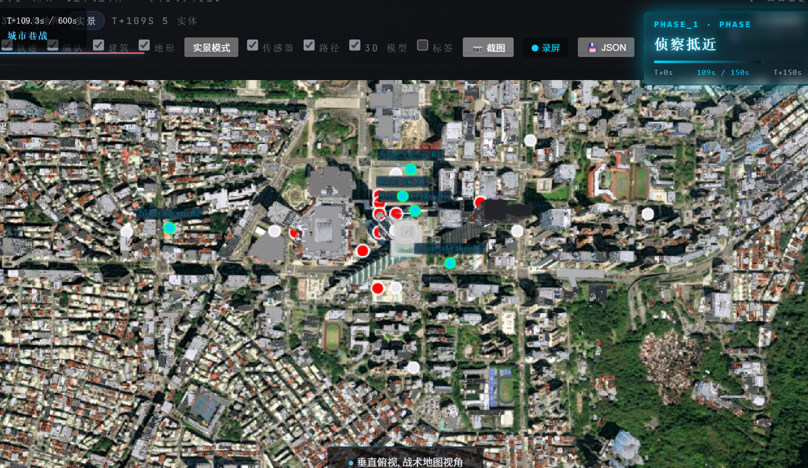

系统定位
用仿真代替实飞 —— 在虚拟战场反复验证装备与战法，让装备先在仿真里打赢，再上真战场。
五大核心能力
飞真实飞控 —— 真机飞控接入，和实战一样飞
避六层避障 —— 不撞楼、不相撞，城市穿梭
探传感器探测 —— 光电/电子战/打击/拦截
编拖拽编排 —— 像搭积木搭场景，一键执行
评闭环评估 —— 全程数据可溯，用数据说话

态势展示主界面 · 城市巷战多机协同推演（demo）
实飞三大难
贵成本高 —— 一次实飞耗费大
险风险大 —— 坠机伤人难避免
难难复现 —— 同一条件难重来
仿真三优势
量可量化 —— 数据指标全记录
复可复现 —— 同一想定反复跑
溯可追溯 —— 全程回放找问题
全流程闭环
想定 → 编排 → 执行 → 态势 → 评估 → 报告

城市巷战 · 蓝方侦察机进入街区

城市巷战 · 多机协同态势
快快速模式 —— 匀速推演，快速看效果
真真实模式 —— 真机飞控，和实战一样飞
稳六层避障 —— 不撞楼、不相撞

源图编辑器 · 整体界面含布局标注

源图编辑器 · 一键执行运行中
四类传感器 · 各管一摊
眼光电侦察 —— 500m 扇形可视，白天高清成像
扰电子干扰 —— 800m 全向覆盖，压制对方链路
锁导弹锁定 —— 1200m 窄扇形，远距先发制人
拦空空拦截 —— 300m 扇形扫描，近距末端反制
探测识别 · 四级递进
探测（首次发现）→ 跟踪（连续 3 帧确认）→ 识别（近距离连续 5 帧）→ 丢失（1 帧未探测需重入流程）
持续 + 近距离才识别，不误报 —— 把鸟、风筝误报成无人机的概率（虚警率）压到最低。
探测成功率
100 次入侵能发现 ≥97%
识别准确率
发现后判对比例 ≥95%

战术雷达盘

系统全貌 · 10 架无人机城市巷战推演实拍
客户自己就能搭场景
拖拖拽组队 —— 像搭积木
配参数配置 —— 右侧直接改
存模板复用 —— 下次直接用
跑一键执行 —— 全程可追溯
0
功能单元
0
阶段泳道

实景模式 · 卫星图 + 建筑 3D

科技风 · 暗色底 + 发光建筑

简约风 · 隐藏网格 + 装饰层
0
视角切换
0
场景模式
0fps
渲染帧率
0
风格热切换